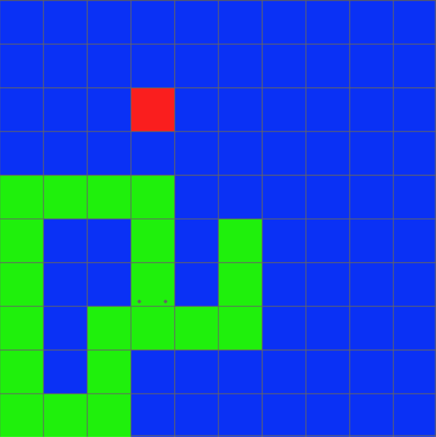

What is Snake?
Snake is a popular computer game in which players control a snake within a grid on the screen and try to maximize their score. The score increases whenever the snake eats a fruit, which appear on the screen one at a time in a random position. Every time the snake eats a fruit, it grows in its size. The player loses when one of two conditions occurs:
- The snake crashes into a wall.
- The head of the snake crashed into its own body.
What was the goal of this project?
The goal of this project was to create an autonomous snake agent that is quite good at the game, and it was successful insofar as it is usually much better than myself!
How was this goal accomplished?
First, I needed to code a version of the snake game myself so that it would be easier to develop intelligent agents for it. This was accomplished through Python and the library pygame. The game can be played here by running the playSnakeGame.py module once Python and pygame are installed.
Once the game was created, I needed to develop a method for the snake to make intelligent decisions. I decided that the snake agent should make a decision for which direction it should turn (up, down, left, right), for every frame of the game. This was accomplished through a neural network with two hidden layers, each with 10 nodes. The inputs were as follows:
- The Manhattan distance from the snake's head to the fruit in each of the four directions.
- The amount of available space left in the grid if the snake decides to move in each of the four directions (achieved through Breadth First Search).
- The length of the snake.
The inputs relating to the amount of available space are not as intuitive as the others, so let's look at a particular example state of the game:
The head of the snake is indicated by the green block with eyes. The other green blocks are parts of the snake's body. The amount of available space if it goes both down or up in the next frame is 0, since the head will hit its own body and game over. The amount of available space if it goes left in the next frame is 6, since there are 6 open spaces enclosed around the snake's body in that direction. Finally, the amount of available space if it decides to go right in the next frame is 74, because this is the amount of spaces left in the grid that are not closed off by its body.
As for the outputs of the network, there are four nodes each representing a decision to move up, down, left or right. Each decision for each direction was a value between 0 and 1, and the snake went go in the direction that has the highest value associated with it.
It is worth noting that the snake agent performed the best with this input/output scheme, but many other frameworks were tried and tested. For example, originally the neural network did not calculate the amount of available space with Breadth First Search. Instead, there were four inputs to determine if there was a wall directly next to the snake in each of the four directions, and four more inputs to determine if there was a snake body part in each of the four directions. These inputs did not allow the snake to plan an optimal path far in advance, so the snake agents performed better when it could see how much space it has to move around in for each direction.
How was the neural network be trained?
Considering that the snake agent needed to learn from scratch, the neural network was trained by learning its weights through a genetic algorithm.
What is a genetic algorithm?
A genetic algorithm (GA) is a type of algorithm that achieves learning through emulating the process of natural selection in nature. This involves creating an initial population of randomly generated chromosomes, each of which are bit strings consisting of all values of 0 or 1. Later, these bit strings are systematically decoded into the parameters that are being learned, such as the weights for the neural network in the case of this project. The population then undertakes a series of four processes to simulate natural selection, which are as follows: Fitness Calculations, Selection, Crossover, and Mutation. In summary:
- Fitness Calculations
- Involves letting the game play for each chromosome in the population, and assigning a score to each chromosome based on a predetermined fitness function.
- The fitness function determines how well the agent performed with a given chromosome.
- Selection
- After all of the fitness scores have been calculated for a population, two chromosomes are (usually) selected in a "roulette-wheel" fashion to be used for crossover. In other words, chromosomes with higher fitness scores are more likely to be selected for crossover.
- Crossover
- Crossover is the process of creating new chromosomes to be used for the population in the next generation. It involves using some bits from each of the two chromosomes picked in selection to create a child chromosome.
- Mutation
- For each new child chromosome, each bit has a random chance of being "mutated", i.e. flipped from 0 to 1 or from 1 to 0.
- Mutation is necessary to prevent the population from being stuck at a local maximum.
For sake of clarity, first all of the fitness calculations occur for a population. Then the processes of selection, crossover, and mutation occur in sequence until there is a population of child chromosomes equal to the chromosomes in the original population with traditional methods. However, the GA created for this project used a slightly different approach, where the half of the population with the highest fitness scores was merged with the newly generated child chromosomes. This is formally known as the (n+n) method. Then, this whole process of creating a new generation of chromosomes repeats indefinitely until intelligent agents that use the parameters from chromosomes in the population start to emerge.
What was the fitness function used for the GA?
The genetic algorithm was run many different times with many different fitness functions. Formulaically, the first fitness function was:
((score^3)*(frame_score)
Score is equivalent to the length of the snake minus 1 (since the snake always starts at length 1), and frame_score is the amount of frames that the snake was alive. However, originally this fitness function resulted in many snakes that looped in circles endlessly without eating any fruit to maximize the frame_score component of the function. Thus, the training was modified such that all snakes are killed off if they do not eat a fruit in 50 frames. Also, if a snake died due to not eating any fruit for 50 frames, 50 points were subtracted from the frame_score to discourage the behavior even further.
Then, after 430 generations, the fitness function was manually changed to be:
((score*2)^2)*(frame_score^1.5)
This function was used encourage the snakes to prioritize survival a little more over trying to get the fruit, since they came to a point where they would often hit their own body while trying to eat fruit.
How were selection, crossover, and mutation implemented?
Selection was implemented in a standard "roulette-wheel" fashion, where two chromosomes are selected to create each child chromosome with a probability proportional to the fitness scores. Crossover was implemented through Single-point crossover. This involves selecting a single point randomly to split the bits between each parent chromosome to create the child chromosome. As for mutation, the rate for mutating each bit was .008.
It is also important to reiterate that the process of selection, crossover, and mutation only occurred to create half of the chromosomes in each new population, and the other half was the half of the previous population with the highest fitness scores. This is known as the (n+n) method, and is described in the paper Snake game AI: Movement rating functions and evolutionary algorithm-based optimization. The (n+n) method decently improved the performance of the genetic algorithm because it prevents the best chromosomes from being lost due to the randomness crossover and mutation.
Also, an interesting fact was there were 9 bits used per each weight in a chromosome, so the total length of a single chromosome ended up being 2032 bits!
How were the neural network and genetic algorithm implemented programmatically?
I created both the neural network and genetic algorithm completely from scratch with Python! The source code for these files can be seen here. The program to see how the genetic algorithm runs from the beginning with a randomized population is called trainGeneticAlgorithm.py, and the neural net/GA functions are in the "helpers" folder.
Enough intro, let's see some of the trained agents in action!
This first agent was the best individual from generation 1468 of a run of the genetic algorithm with a population size of 500 chromosomes.
This next agent was the best individual from generation 1202 of a different run of the genetic algorithm with a population size of 500 chromosomes at first, and then at a later generation was decreased to a size of 200 to speed up the process.
The final agent I'll be showing was the best individual from generation 1836 of a different run of the genetic algorithm that also had a size of 500 chromosomes at first, and then at a later generation was decreased to a size of 100 to speed up the process further.
To view all of these agents in action, go here and run the testTrainedAgents.py file.
As you can see, the snake agents learned to play the game quite well! They certainly have gotten better than myself. Even so, they are a ways away from achieving a perfect score, so in the future they might need more complex inputs so they can avoid getting stuck in situatons where they will inevitably run into their own body.
I hope you enjoyed learning about my development process, and that you learned about the power of combining neural networks with genetic algorithms to develop AI!